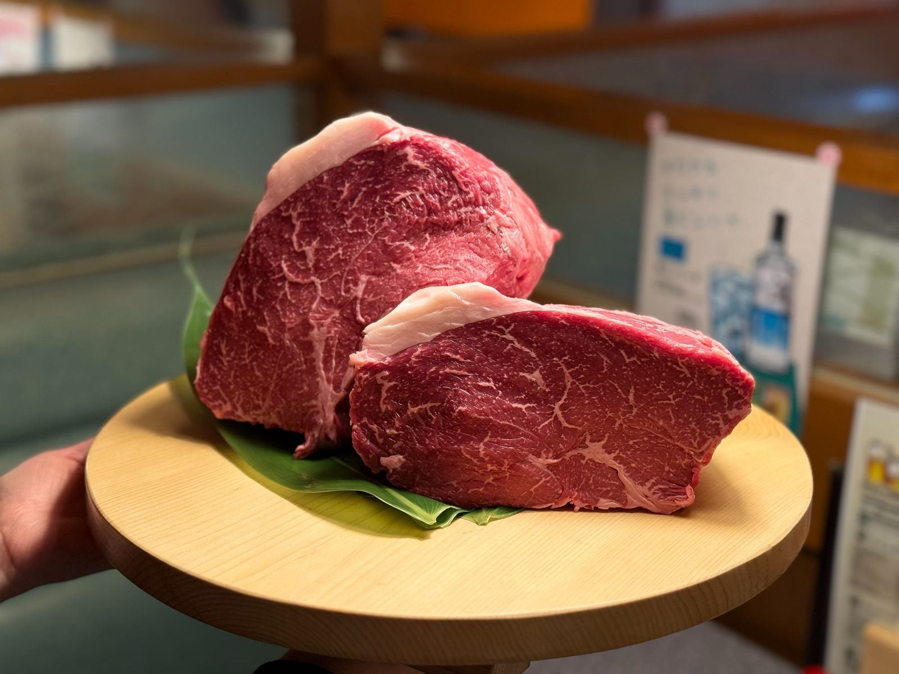
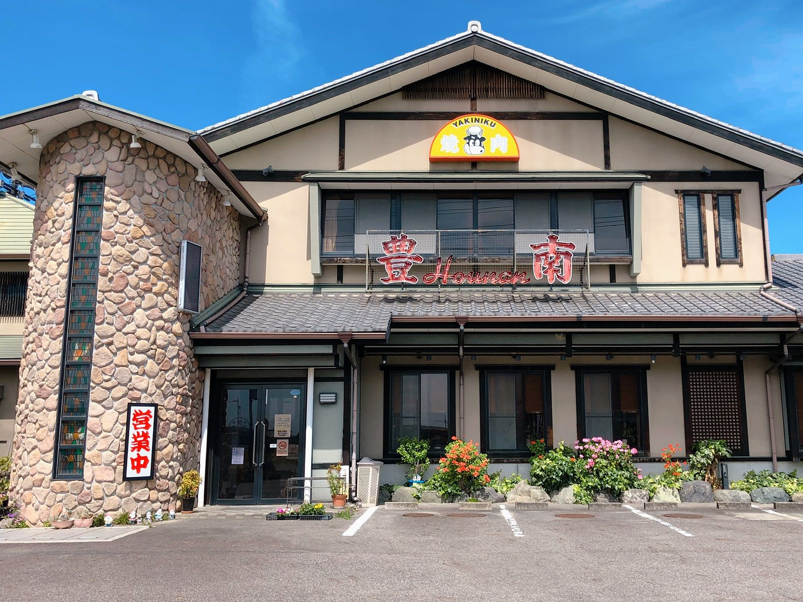

いい肉かどうかは、
五十余年見てきました。
ひとつの銘柄にしぼってはいません。みかわ牛、近江牛、鳳来牛、足助紅牛。産地の違う和牛を、その時いちばん良いものから選んでお出ししています。
Our beef
主に扱っている和牛
同じ「和牛」でも、銘柄によって持ち味がまるで違います。それぞれのいちばん良いところが出る部位を選んで、使い分けています。
みかわ牛愛知県三河地方
地元・三河で育った黒毛和牛。肉質等級4以上のものだけが名乗れます。まろやかな舌触りとジューシーな霜降りが持ち味です。当店はみかわ牛指定店として扱っています。
近江牛滋賀県
神戸牛・松阪牛と並ぶ、日本三大和牛の一角。脂の旨みが上品で、食べたあとに重さが残りません。
その脂のよさがいちばん分かるバラ肉と、鮮度がそのまま味に出るハラミ・ホルモンに近江牛を使っています。産地が近いぶん、いい状態のものが手に入ります。
入荷したぶんだけの数量限定です。
鳳来牛愛知県新城市
奥三河の黒毛和牛。肥育の条件が厳しく、育てている農家も市内にごくわずかしかありません。地元・三河が誇れる黒毛和牛の最高峰だと、自分の舌で確かめたうえで思っています。
薄切りでも上品に甘く、和牛香が脳裏に焼き付くほど。濃厚な旨みをいちばん感じていただけるサーロインを、年末のすき焼き・しゃぶしゃぶ用にご用意しています。
ご家庭でお召し上がりいただくお持ち帰りが中心です。数に限りがありますので、お早めにご相談ください。
足助紅牛愛知県豊田市足助
同じ豊田市で生まれ、育った牛です。褐毛和種——いわゆる「あか牛」で、愛知県では初めてのブランドになります。
サシが少なく、脂ではなく赤身の旨みで食べさせるお肉です。黒毛和牛より少し噛み応えがありますが、噛むほどに味が出てきます。「重いのは苦手、でも肉はしっかり食べたい」という方に、これ以上のものはないと思っています。主にリブロースとランイチをご用意しています。
味付けは塩がおすすめ。弾力を楽しみたい方は厚切り、やわらかさを求める方は薄切りで、どちらもレア焼きでどうぞ。
銘柄を決め打ちにすると、その日もっと良い牛が別の産地に来ていても取れません。名前が付いているぶんだけ、お値段も上がってしまいます。うちは名前ではなく断面を見て選びたいので、産地は広く持つようにしています。おかげで、いいお肉を無理のない値段でお出しできています。
その日どこの牛が入っているかは、遠慮なくスタッフか大将にお尋ねください。
Certified
みかわ牛指定店ということ
扱っている銘柄のひとつに過ぎませんが、みかわ牛だけは指定店として扱っています。それには、はっきりしたきっかけがあります。
私はこの三河で生まれ、三河で育ちました。
この牛を知ったのは20年前になりますが、飛騨牛や宮崎牛など他のブランド牛と比べても負けない程に美味しい牛が、地元三河で肥育されていることに衝撃を受けました。
ただ、ブランド和牛としての認知は全国で見るとかなり低い。私と同じ三河生まれ三河育ちのこの牛を、もっと皆様に知ってもらいたい。それがきっかけです。
名前が付いているから良い、ということではありません。産地が近いぶん、どんな育て方をされた牛かが分かる。分かるから、迷わず選べる。当店にとってはそれが指定店であることの意味です。
Experience
40種以上のブランド牛を見てきて
恩師の元で今まで取り扱わせていただいたブランド牛・交雑牛・輸入牛は、40種を超えます。そのうえで、いまのかたちに行き着きました。
牛も人間と同じで、産地（ブランド）が一緒でも、個体によって別物かと思うほどの違いが出ます。環境や遺伝で、同じ等級でも一頭ずつ違う。だからブランド名だけでは決められません。断面を見て、その日いちばん良いものを取る。それが仕入れの仕事です。
ひとつの銘柄にしぼらないのは、そのためです。銘柄ごとに得意なところが違うので、部位によって使い分ける。そのほうが、お客様に喜んでいただけるものをお出しできます。
部位についても、切り手によって様々な解釈やカットがあります。当店で扱う24の希少部位は、それぞれの持ち味と焼き方まで書き出しました。
Since 1973
「美味しかったよ」を聞きたいがために
1973年、三河に産まれて。皆様に支えられて五十余年。それだけ続けてこられたのは、帰り際のこの一言があったからです。
華やかな店ではありません。凝った演出もありません。うちがやってきたのは、いい肉を仕入れて、余計なことをせずに出す。それだけです。ゆるりと気楽に召し上がっていただければ、それでいいと思っています。

Akami
赤身をおいしく食べていただくために
霜降りだけが和牛ではありません。とくに足助紅牛のようなあか牛は、赤身にしっかり味が出ます。
選ぶ
同じ等級でも一頭ずつ違います。断面を見て、その日いちばん良いものを取ります。
寝かせる
切ってすぐより、少し置いたほうが味が出ます。専用の冷蔵庫で湿潤熟成させ、いちばんの食べごろになったものからお出ししています。
切る
ほとんどのお肉を、塊から手切りで整形しています。味付けで厚みも変えます。タレで味付けするものは薄切り、塩で味付けするものは厚切り。お好みがあれば伺いますので、お声かけください。
焼く
焼きすぎないことが何より大事です。厚さによって焼き方が変わりますので、下にまとめました。
薄切りの焼き方
片面5秒、ひっくり返してもう5秒。合わせて10秒で十分です。それ以上焼くと硬くなり、せっかくの旨みが逃げてしまいます。
厚切りの焼き方
まず表面に美味しそうな焼き目が付くまで焼きます。次に、焼いたのと同じだけの時間、取り皿に上げて休ませます。最後に、食べる直前に表面を温める程度にさっと焼く。これがいちばんおいしく召し上がっていただける焼き方です。
塊で仕入れて熟成させているぶん、食べごろは日によって変わります。今がまさに最高という部位を毎日オススメメニューでお出ししていますので、お越しの際はぜひご覧ください。全部位を常に揃えているわけではありませんが、そのぶん、いちばん良い状態のものだけをお出しできます。
Ingredients
お肉以外も、選んでいます
お米「大地の風」
白米は地元でとれたお米を使っています。焼肉屋のごはんは、脇役ではありません。
愛知県産のみかわ豚
愛知県産の豚の中でも、餌と肥育に拘った厳選豚を使います。ネギとも相性抜群です。
スープのだし
野菜の優しい甘みと牛骨の旨み。みそ汁はムロ節からだしを取った昔ながらの味です。
近江牛のホルモン・ハラミ
内臓は鮮度がそのまま味に出ます。だからこそ近江牛にこだわっています。豚ホルモンは豊田の加工場から直入荷。いずれも厳選入荷のため数量限定です。
まずは一度、召し上がってください
言葉より、食べていただくのが早いと思っています。ランチはご予約不要、コースと肉盛りは前営業日までのご予約で承ります。